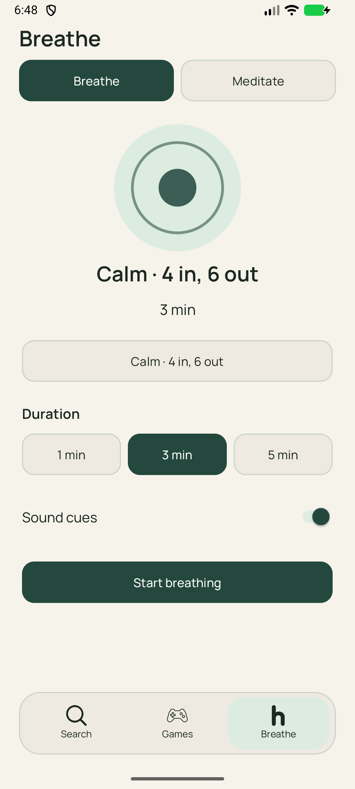
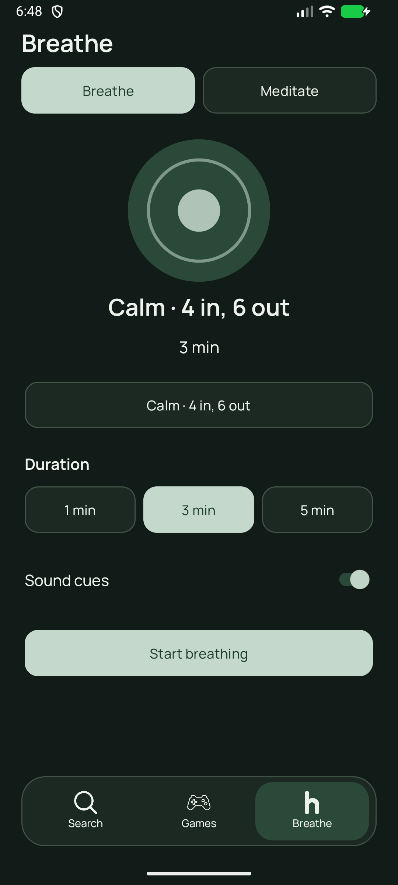
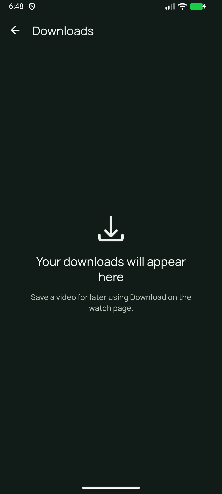
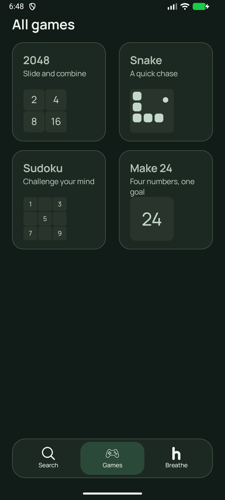


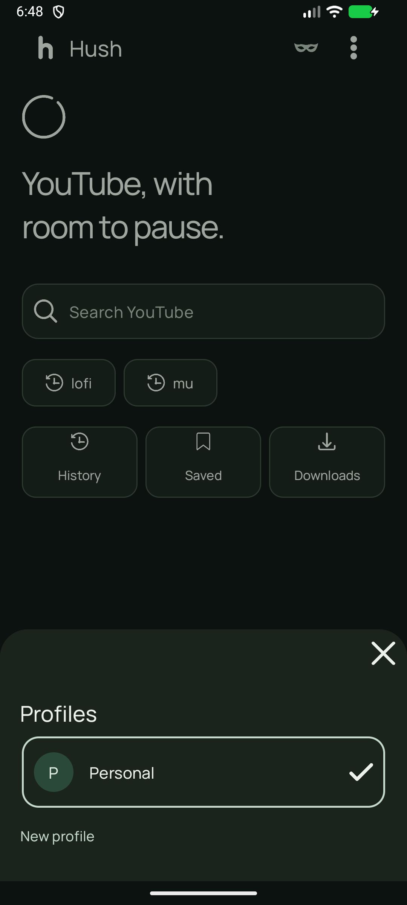


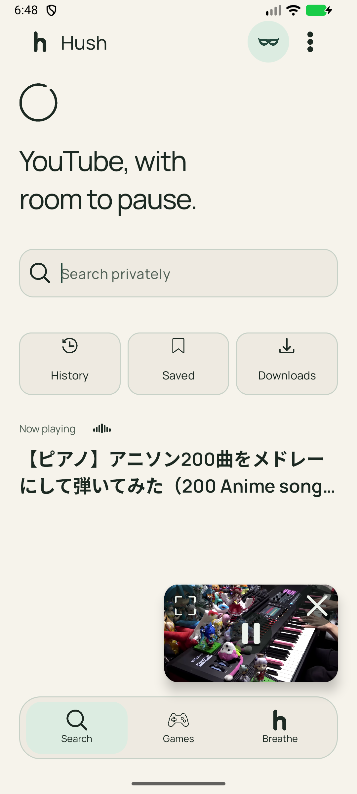

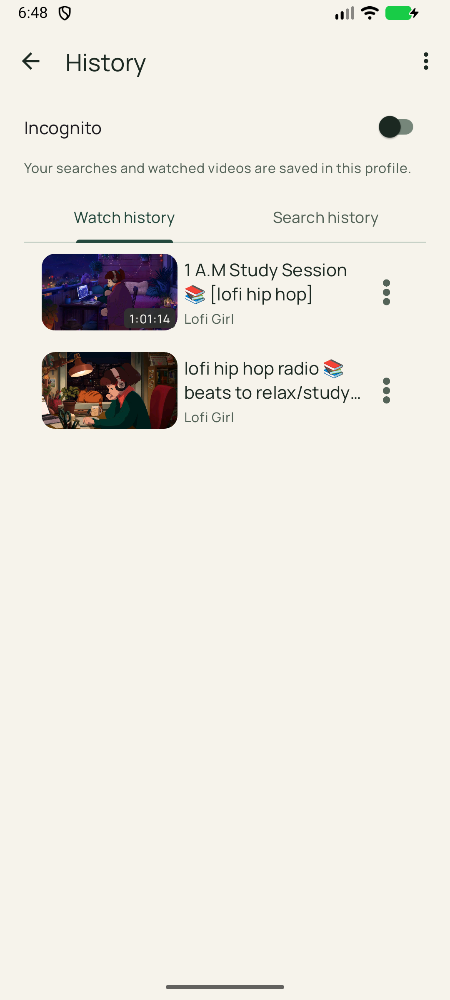
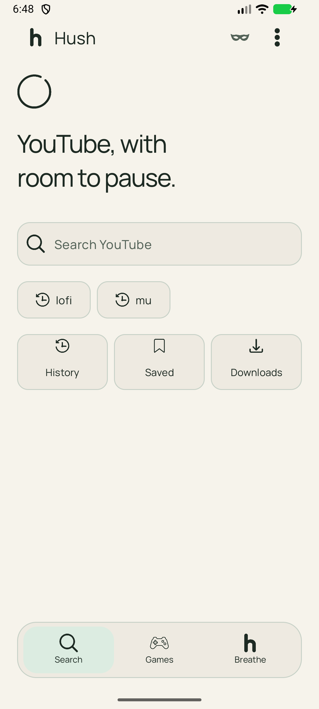

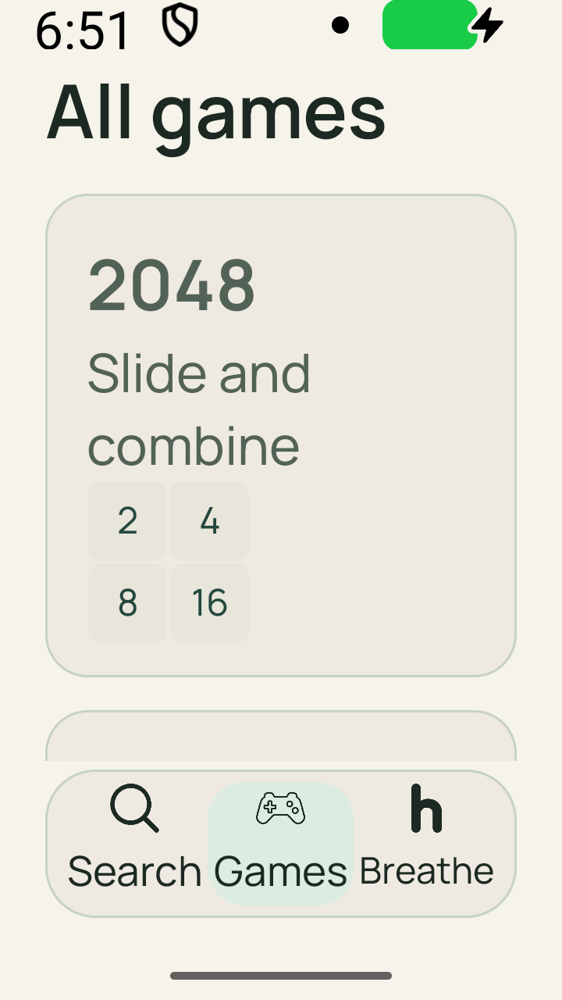
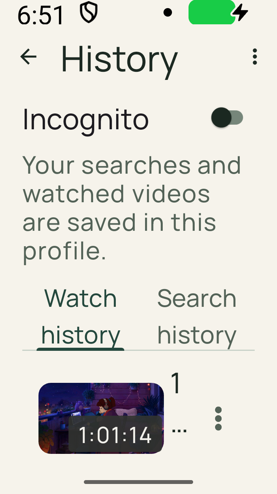


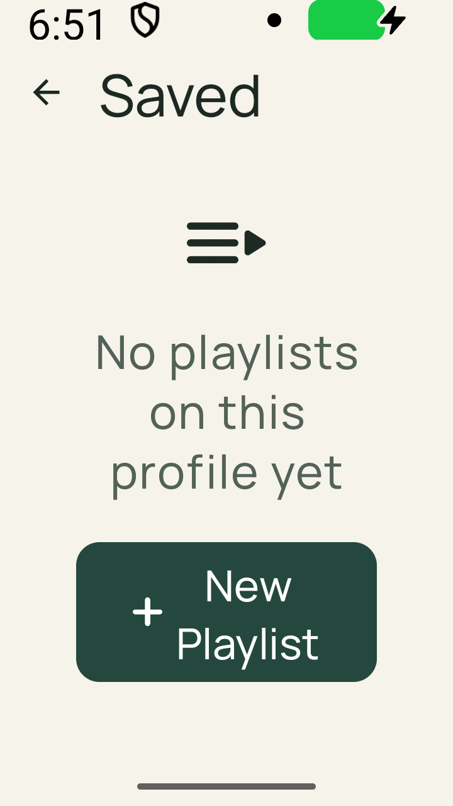
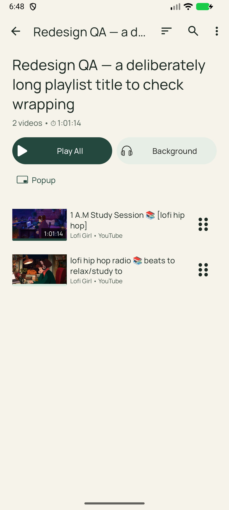


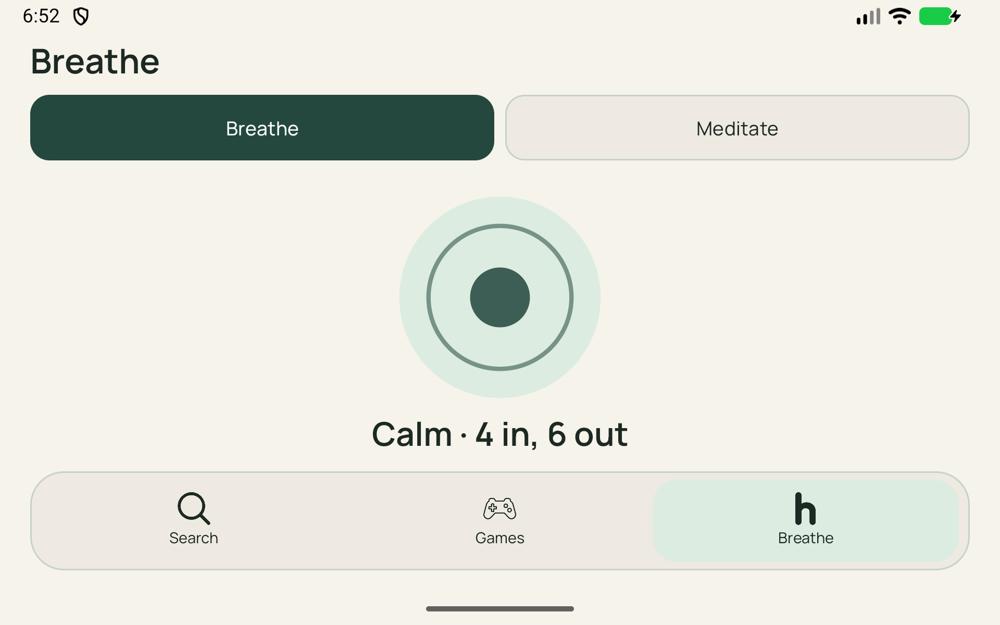
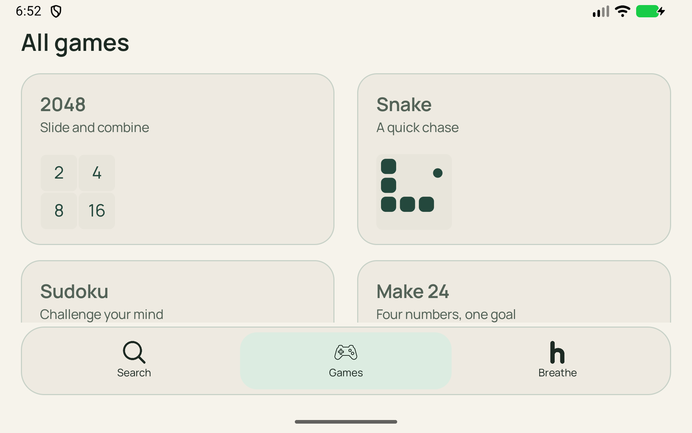
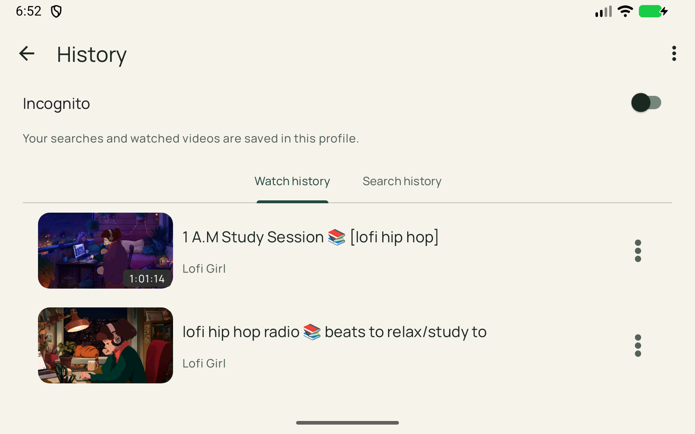
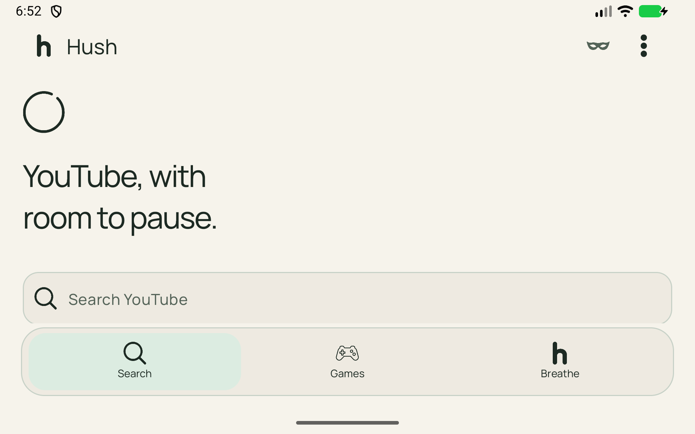

Captured from the installed Android build. QA playlist captures use a temporary playlist that has been deleted. Narrow large-text and wide landscape captures are separate configurations; the emulator settings have been restored.















